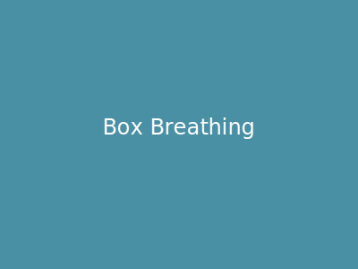

Box Breathing

Box breathing, also known as square breathing, is a simple yet powerful technique used to calm the nervous system, reduce stress, and improve focus. It involves inhaling, holding, exhaling, and holding again, each for the same count.
Instructions:
- Find a comfortable position, either sitting or lying down.
- Close your eyes if that helps you focus.
- Inhale slowly and deeply through your nose for a count of 4. Feel your belly expand.
- Hold your breath for a count of 4.
- Exhale slowly and completely through your mouth for a count of 4.
- Hold your breath again for a count of 4.
- Repeat steps 3-6 for several minutes.
Tips:
- Maintain a smooth and even pace throughout the exercise.
- If you find it difficult to hold your breath for a count of 4, reduce the count to 2 or 3.
- Focus on the sensation of your breath entering and leaving your body.
Cautions:
- If you feel lightheaded or dizzy, stop the exercise and return to normal breathing.
- Consult with your doctor before practicing box breathing if you have any underlying health conditions.
Back to Exercises